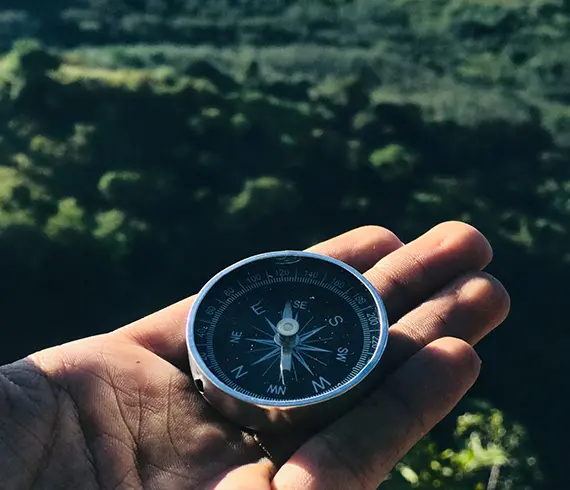
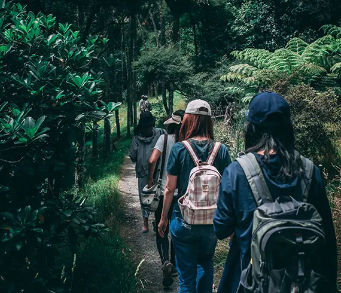

Популярные направления
Когда Горный Алтай называют второй Швейцарией, алтайцы отвечают, что нужно еще разобраться, кто тут второй. Чтобы расставить все по местам, отправляйтесь в путешествие по Чуйскому тракту , по Горному Алтаю до самой Монголии. 962 км — полный маршрут Новосибирск—Новоалтайск—Бийск—Майма —государственная граница с Монголией.

Впечатляющие маршруты
Вишенкой на торте станет поездка в Национальный парк Порт-Кэмпбелл через Ocean Road, которая сама по себе стоит визита в Австралию. Полюбуетесь одной из главных достопримечательностей страны — скалами, которые до 1922 года были известны в народе как «Хрюшка и поросята», а сегодня носят название «Двенадцать апостолов».
